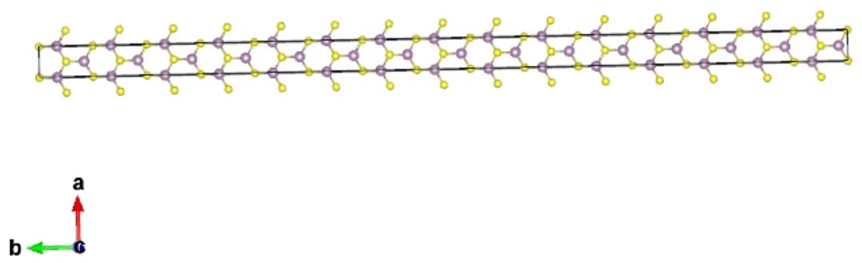
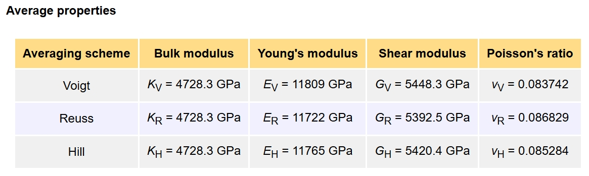

Tutorials
Running Ways
There are 2 ways to run qvasp under command line mode:
Just type
qvasp -pbe C Hin the terminal to generate POTCAR;echo -e "\n \n" | qvasp -bandd;
Run qvasp in Batch Mode
if one wants to run qvasp in batch mode, for example, to generate POTCAR file in several sub-olders with POSCAR:
for i in `ls -l |grep -a "^-"|awk '{print $NF}'`
do
cd $i
elements=`cat POSCAR|sed -n 6p`
qvasp -pbe $elements
echo $i "done"
cd ..
done
if one wants to extract the specified physical quantity, for example, to read band gap in several sub-olders:
for i in `ls -l |grep -a "^-"|awk '{print $NF}'`
do
cd $i
bandgap=`echo -e "\n \n" | qvasp -bandd | sed -n '7p' | awk '{print $7}'`
echo "Band gap of " $i “ is ” $bandgap
cd ..
done
Generate Input Files
To perform a firt principle calculation using VASP, usually one needs 4 files, INCAR,POSCAR, POTCAR and KPOINTS.
INCAR contains all keywords and tells VASP what to calculate;
POSCAR contains lattice parameters, atomic coordinates information,and atomic velocity information (for MD);
KPOINTS, contains K-points information in the reciprocal space, at which the wave function integrates to obtain the charge density.
POTCAR is a pseudo potential file, which is USPP or PAW type;
qvasp provide flexible toolkit to generate the input files for VASP.
POSCAR
Usually, we recommand generate POSCAR firstly.
> qvasp -c2p C.cif
or
> qvasp -res2vasp C.res
If the POSCAR belongs to solid surface model, and need to fix the atomic potsions in botom layers. Further use:
> qvasp -fix POSCAR
Then the fix scale need to be inputted, one should note that the vacuum layer should along z direction.
> cat POSCAR
Transfer by qvasp
1.0
2.522100 0.000000 0.000000
1.261050 2.184203 0.000000
1.261050 0.728068 2.059286
C
2
Direct
0.000000 0.000000 0.000000
0.250000 0.250000 0.250000
KPOINTS
The generation of KPOINTS requires the exist POSCAR, the k density and lattice constant determine the KPOINTS. For self-consistent calculation, we need to prepare a KPOINTS file to specify density of K-points and the method for automatic k-mesh generation.
> qvasp -k 0.03
Then, qvasp will ask us to input KPT-Resolved Value between K-points in reciprocal cell in units of \(2\pi \times 0.03 Å^{-1}\). And in this command, the dimension of material will be considered, the vacuum direction will be set to 1. We should note that the dimension of material may be wrong, we could revise it manually.
or
We can ignore the dimension of material via using:
> qvasp -3k 0.03
Number of K-points increases when the density of k decreases. For each direction, the number is determined by
where \(\vec{b}_{i}\) are the reciprocal lattice vectors. These values are rounded to the next integer greater than or equal to N. The recommend value ~0.03 (\(2\pi \times 0.03 Å^{-1}\)) is enough for most system. This parameter is similar as the parameter KSPACING in INCAR. But the unit is different. Unit of KSPACING is \(Å^{-1}\), and the unit of qvasp is \(2\pi \times 0.03 Å^{-1}\).
The output KPOINTS file is:
> cat KPOINTS
Auto
0
G
16 16 16
0. 0. 0.
POTCAR
The POTCAR should be generated by the element orders in POSCAR (6th line).
> qvasp -pbe C
The RECOMMENDED_POTCAR tag control whether to use recommended potentials from VASP manual (Page. 195, 2018.10.29, http://cms.mpi.univie.ac.at/vasp/vasp/Recommended_PAW_potentials_DFT_calculations_using_vasp_5_2.html).
POTCAR types:
No extensions “_”
_d. An extension d, treat the d semi core states as valence state._pvor_sv. The extensions_pvand_svimply that the p and s semi-core states are treated as valence states._hand_s. An extension_hor_simplies that the potential is harder or softer than the standard potential and hence requires a higher or lower energy cutoff.Pseudo hydrogen. ex:
H.5_GW. Used for GW calculation.
If we want to use _sv or _pv or H 1.25e pseudo potential， use command:
> qvasp -pbe Ca_sv H1.25
Then the POTCAR file is generated as:
> cat POTCAR
PAW_PBE Ca_sv 06Sep2000
10.0000000000000
parameters from PSCTR are:
SHA256 = a47365830e737f14e0e6c5cf1ed81b94e081eecf0a33df105380881bc9da05d5 Ca_sv/POTCAR
COPYR = (c) Copyright 06Sep2000 Georg Kresse
COPYR = This file is part of the software VASP. Any use, copying, and all other rights are regulated by the VASP license agreement.
COPYR = If you do not have a valid VASP license, you may not use, copy or distribute this file.
VRHFIN =Ca: 3s3p4s
LEXCH = PE
EATOM = 1006.0909 eV, 73.9456 Ry
TITEL = PAW_PBE Ca_sv 06Sep2000
LULTRA = F use ultrasoft PP ?
If we want to check the type of POTCAR, use command:
> qvasp -cp
TITEL = PAW_PBE Ca_sv 06Sep2000
TITEL = PAW_PBE H1.25 07Sep2000
The results show that the type of POTCAR is PAW_PBE, and the elements contain Ca_sv and H1.25.
INCAR
qvasp can provide INCAR template for structural optimization, electronic structure calculations.
> qvasp -relax
The INCAR for structure optimization was generated sucessufully
> cat INCAR
SYSTEM = qvasp
INCAR-basic
PREC = Normal
ENCUT = 400 eV
NELMIN= 5
LREAL = F ## set to Auto if the valance electron number > 20
# ALGO = Fast
EDIFF = 1E-5
# ISMEAR = 0
SIGMA = 0.2
# LDAU=.TRUE. ## For LDA + U set
# LDAUTYPE=2
# LDAUL=-1 2 ## -1,0,1,2,3 for none,s,p,d,f
# LDAUU=0 3
# LDAUJ=0 0
ISPIN = 1 ## For magnetism set
# MAGMOM = 3*1 -4 16*0 # Antiferromagnetism needs to be set
# NCORE = 2
# KPAR = 2
NCORE = 2 ## Important to reduce calculate time, equal sqrt(cpu cores)
Ionic Relaxation
ICHARG = 2
EDIFFG = -0.03 #force
NSW = 300 #max steps for IOM
IBRION = 2
POTIM = 0.5
ISIF = 2 #not change lattice:2 chang lattice:3
# IOPTCELL= 1 0 0 0 1 0 0 0 0 # fix or relax lattice
PSTRESS= 0
LCHARG = .FALSE.
LWAVE = F
# Use 'qvasp -p2c' to transer format (VESTA or MS)
However, here qvasp only provide the template, we should revised them accordingly. In addition, “qvasp -relax” means to merge “$qvasppath/exefile/INCAR/INCAR-base” and “$qvasppath/exefile/INCAR/INCAR-relax”, we can customized the template.
Read Energy (Enthalpy)
qvasp is very powerful at pre- and post- process VASP band structure calculation. “qvasp -e” provide flexible way to read the energy (enthalpy) from OUTCAR or folder/OUTCAR
From OUTCAR
> ls
CHG CONTCAR EIGENVAL INCAR log OUTCAR POSCAR REPORT vasp60.o21678 WAVECAR CHGCAR DOSCAR IBZKPT KPOINTS OSZICAR PCDAT POTCAR vasp60.e21678 vasprun.xml XDATCAR
> qvasp -e
Energy in this folder is: -6.75192696 eV
Get COVERAGED: YES !
> cd ../150GPa (PSTRESS=1500 in INCAR)
> ls
CHG CONTCAR EIGENVAL INCAR log OUTCAR POSCAR REPORT vasp60.o21678 WAVECAR CHGCAR DOSCAR IBZKPT KPOINTS OSZICAR PCDAT POTCAR vasp60.e21678 vasprun.xml XDATCAR
> qvasp -e
Pressure: 150 GPa,Enthalpy: 8.13958935 eV, PV: 39.09295879
Get COVERAGED: YES !
From folder/OUTCAR
>ls
150GPa/OUTCAR 200GPa/OUTCAR 300GPa/OUTCAR Ca/OUTCAR H2/OUTCAR
> qvasp -e
------------------------------------------------------------------------------------------------------
Folder: 150GPa , Pressure: 150 GPa, Enthalpy: 8.13958935 eV, PV: 39.09295879 , coveraged: YES
------------------------------------------------------------------------------------------------------
Folder: 200GPa , Pressure: 200 GPa, Enthalpy: 20.62201168 eV, PV: 47.97087856 , coveraged: YES
------------------------------------------------------------------------------------------------------
Folder: 300GPa , Pressure: 300 GPa, Enthalpy: 43.05336994 eV, PV: 63.34441658 , coveraged: YES
------------------------------------------------------------------------------------------------------
Folder: Ca , Energy: -2.07213341 eV, coveraged: YES
------------------------------------------------------------------------------------------------------
Folder: H2 , Energy: -6.75192696 eV, coveraged: YES
------------------------------------------------------------------------------------------------------
> ls
R6G/OUTCAR TiN010/OUTCAR TiN010-R6G/OUTCAR
> qvasp -e
|---------------------------------------------------------------|
| foldername | energy | convergence |
|---------------------------------------------------------------|
| R6G | -403.42205949 | YES |
|---------------------------------------------------------------|
| TiN010 | -2709.70945598 | YES |
|---------------------------------------------------------------|
| TiN010-R6G | -3113.30729288 | YES |
|---------------------------------------------------------------|
the max energy point is:
folder: R6G energy: -403.42205949
the min energy point is:
folder: TiN010-R6G energy: -3113.30729288
Format Transfer
qvasp provide effective tool for files format transfer, include:
.cif to POSCAR
(support batch mode)
> qvasp -c2p C.cif Pt.cif Si.cif
or for Materials Studio doping system, run:
> qvasp -c2p2 C.cif Pt.cif Si.cif
POSCAR to cif
> qvasp -p2c CONTCAR
OUTCAR to trajectory file
(the trajectory file is .arc, can be opened by Materials Studio)
> qvasp -out2arc
OUTCAR to Gauss.log
Gauss.log can be opened by Gaussian Views.
> qvasp -gauss
.castep to CHGCAR (VASP)
(density file, .castep, is the calculated result from CASTEP) to CHGCAR (VASP,can be opened by VESTA)
> qvasp -den2vasp
.res file to POSCAR
(res file is the structure file for GROMACS)
> qvasp -res2vasp
Build Calculation Models
Primitive Cell
The primitive cell is important for cleaving solid surface and calculating band structure.
Here we can use “qvasp -findcell 0.1” to find primitive cell, the output is cell.vasp.
Where “0.1” is the torlerance value (tor) for juduging symmetry.
{kind=link}
upload the (Pt-bulk.cif) (conventional cell) to server:
{kind=link}
> qvasp -c2p Pt-bulk.cif
Transfer done of Pt-bulk.cif !
> cat POSCAR
Transfer by qvasp
1.0
3.923900 0.000000 0.000000
0.000000 3.923900 0.000000
0.000000 0.000000 3.923900
Pt
4
Direct
0.000000 0.000000 0.000000
0.000000 0.500000 0.500000
0.500000 0.000000 0.500000
0.500000 0.500000 0.000000
> qvasp -findcell 0.1 ## transfer converntional cell to primitive cell
Analysis precision is 0.100
Read data from POSCAR file
Find cell.vasp from POSCAR, Good Luck!
> cat cell.vasp
Transfer by qvasp
1.000
0.00000000 1.96195000 1.96195000
1.96195000 0.00000000 1.96195000
1.96195000 1.96195000 0.00000000
Pt
1
Direct
0.00000000 0.00000000 0.00000000
{kind=link}
Solid Surface
We can use “qvasp -cls” to cleave the solid surface from a bulk.
“qvasp -cls” require the input structure is primitive cell.
We can use “qvasp -findcell 0.1” to obtain the primitive cell of “cell.vasp”, as aforementioned discussions.
> qvasp -cls cell.vasp ## or use { echo -e ""1 1 1"\n; 4 \n;15\n;0.1\n"|qvasp -cls cell.vasp } in batch mode
Read crystal file from: cell.vasp
Input Miller Index(such as 1 0 0):1 1 1
Input Slab Layers Number(default:6):4
Input Slab Vacuum Thick(default:20 angston):15
Input Slab Depth(default:0.0):0.15 ## determine different exposing terminal of metal oxide: O or metal
Transfer done, please check POSCAR-surface.vasp
> cat POSCAR-surface.vasp
Create by qvasp
1.00000000
2.77461630 0.00000000 0.00000000
-1.38730815 2.40288820 0.00000000
0.00000000 0.00000000 21.79639416
Pt
4
Direct
0.00000000 0.00000000 0.31640069
0.66666667 0.33333333 0.21246310
0.33333333 0.66666667 0.10852551
0.00000000 0.00000000 0.00458791
Open POSCAR-surface.vasp using VESTA:
{kind=link}
Fix Atomic Layers
For a solid surface models, we usually need to fix the bottom layers because: 1. It is closer to actual surface model becuase the thickness of actual surface model are much thicker than the calculated model, and the atoms in deep layers are usually not change. 2. The force convergence of fixed layers are not considered during structural optimizations, herein, fixing the bottom layers can reduce the computational comsumption.
We can use “qvasp -fix” to fix atomic layers for solid surface.
{kind=link}
Therefore, we can run the follow command bottom layer:
> cat Pt111
Pt111
1.000
2.81664991 0.00000000 0.00000000
-1.40832496 2.43929038 0.00000000
0.00000000 0.00000000 21.89940071
Pt
4
Direct
0.00000000 0.00000000 0.35752000
0.00000000 0.00000000 0.04248000
0.66666667 0.33333333 0.14749000
0.33333333 0.66666667 0.25251000
> qvasp -fix Pt111
Input the Z coordinate interval you want to fix (eg: 0.1 0.2): 0 0.2
Got it, check the POSCAR!
> cat POSCAR
Pt111
1.000
2.81664991 0.00000000 0.00000000
-1.40832496 2.43929038 0.00000000
0.00000000 0.00000000 21.89940071
Pt
4
Selective dynamics
DIRECT
0.000000000 0.000000000 0.357520000 T T T
0.000000000 0.000000000 0.042480000 F F F
0.666666670 0.333333330 0.147490000 F F F
0.333333330 0.666666670 0.252510000 T T T
Supercell
We can “qvasp -sc” to create the supercell of Pt111 with:
> cat Pt111
Pt111
1.000
2.81664991 0.00000000 0.00000000
-1.40832496 2.43929038 0.00000000
0.00000000 0.00000000 21.89940071
Pt
4
Direct
0.00000000 0.00000000 0.35752000
0.00000000 0.00000000 0.04248000
0.66666667 0.33333333 0.14749000
0.33333333 0.66666667 0.25251000
> qvasp -sc Pt111
Read data from Pt111 file
Conctruct supercell from Pt111, Good Luck!
Please input the supercell along a, b and c directions (eg. 3 3 1):2 2 1
Got it, Please check the supercell221.vasp file
> cat supercell221.vasp
Supercell 221 from Pt111
1.000000
5.633299820000 0.000000000000 0.000000000000
-2.816649920000 4.878580760000 0.000000000000
0.000000000000 0.000000000000 21.899400710000
Pt
16
Direct
0.000000000000 0.000000000000 0.357520000000
0.500000000000 0.000000000000 0.357520000000
0.000000000000 0.500000000000 0.357520000000
0.500000000000 0.500000000000 0.357520000000
0.000000000000 0.000000000000 0.042480000000
0.500000000000 0.000000000000 0.042480000000
0.000000000000 0.500000000000 0.042480000000
0.500000000000 0.500000000000 0.042480000000
0.333333335000 0.166666665000 0.147490000000
0.833333335000 0.166666665000 0.147490000000
0.333333335000 0.666666665000 0.147490000000
0.833333335000 0.666666665000 0.147490000000
0.166666665000 0.333333335000 0.252510000000
0.666666665000 0.333333335000 0.252510000000
0.166666665000 0.833333335000 0.252510000000
0.666666665000 0.833333335000 0.252510000000
Open supercell221.vasp with VESTA:
{kind=link}
Orthorhombic Cell
We can build orthorhombic cell form any other lattice. For instance, transfer hexagonal graphene to orthorhombic graphene to analysis the armchair and zigzag direction.
{kind=link}
> cat POSCAR ## the input file is POSCAR
graphene-hex
1.0
2.4600000381 0.0000000000 0.0000000000
-1.2300000191 2.1304225263 0.0000000000
0.0000000000 0.0000000000 24.0000000000
C
2
Direct
0.666666687 0.333333343 0.500000000
0.333333313 0.666666627 0.500000000
> qvasp -orthcell
Please input the max value when redefine lattice(1~5):
2
Scaning transfer matrix from POSCAR,Please waiting...
Finishing 20% ...
Finishing 100% ...
Removing the repeat case ...
=======================================================================================================
ID Atomic-num. a b c Redefine matrix
=======================================================================================================
1 4 2.4600 4.2608 24.0000 1 1 0 -1 1 0 0 0 1
2 8 2.4600 4.2608 48.0000 1 1 0 -1 1 0 0 0 2
3 8 2.4600 8.5217 24.0000 1 1 0 -2 2 0 0 0 1
4 8 4.2608 4.9200 24.0000 1 -1 0 2 2 0 0 0 1
5 16 2.4600 8.5217 48.0000 1 1 0 -2 2 0 0 0 2
6 16 4.2608 4.9200 48.0000 1 -1 0 2 2 0 0 0 2
7 16 4.9200 8.5217 24.0000 2 2 0 -2 2 0 0 0 1
8 32 4.9200 8.5217 48.0000 2 2 0 -2 2 0 0 0 2
=======================================================================================================
Which ID do you want to use in above table(eg 1 2):1
Successfully transfer to orthorhombic lattice in POSCAR-1.vasp!
> cat POSCAR-1.vasp
qvasp
1.000000
1.2300000190000000 2.1304225262999998 0.0000000000000000
-3.6900000571999998 2.1304225262999998 0.0000000000000000
0.0000000000000000 0.0000000000000000 24.0000000000000000
C
4
Direct
0.5000000150000000 0.8333333280000000 0.5000000000000000 C0001
0.0000000150000000 0.3333333280000000 0.5000000000000000 C0002
0.4999999700000000 0.1666666570000000 0.5000000000000000 C0003
0.9999999700000000 0.6666666569999999 0.5000000000000000 C0004
The POSCAR-1.vasp belongs to orthorhombic lattice:

Insert Points for Transition States
> qvasp -it 4
Then the 00/POSCAR 01/POSCAR 02/POSCAR 03/POSCAR 04/POSCAR 05/POSCAR will be generated.
The 00/POSCAR is the reactant and the 05/POSCAR is production.
The 01/POSCAR 02/POSCAR 03/POSCAR 04/POSCAR are the inserted points.
If you insert the transition points using Materials Studio (Tools–>Reaction Preview)
The “.arc” file will be generated. Then rename “.arc” with “POSCAR2” and the reactant wit “POSCAR1”, then upload them on the server, run:
> qvasp -it2
Then the 00/POSCAR 01/POSCAR 02/POSCAR 03/POSCAR 04/POSCAR … will be generated from ““*”.arc”
Eliminate Imaginary Frequency
In searching transition states in chemical reaction.
We usually use the frequency calculations to confirm the saddle point. If there is only one imaginary frequency, the results show that we find the correct saddle point.
{kind=link}
And ‘qvasp -zpe’ will point that this is a transition state and the zero point energy will be calculated.
> qvasp -zpe
this is a transition state
Zero point energy is : .607437 eV
12 f/i= 27.463662 THz 172.559279 2PiTHz 916.089135 cm-1 113.580618 meV
Otherwise, the ‘qvasp -zpe’ will point that “The results are meaningless,baceuse there is too many imaginary frequencies”.
> qvasp -zpe
The results are meaningless,baceuse there is too many imaginary frequencies
Zero point energy is : .388205 eV
8 f/i= 0.966136 THz 6.070412 2PiTHz 32.226831 cm-1 3.995619 meV
9 f/i= 6.124551 THz 38.481687 2PiTHz 204.293017 cm-1 25.329115 meV
The result is sketched as:
{kind=link}
Here we need to eliminate at leat one imaginary frequency.
Empirically, we can use formula of:
X_new = X + dx * correctfactor
to correct the imaginary frequency, for instance:
8 f/i= 0.966136 THz 6.070412 2PiTHz 32.226831 cm-1 3.995619 meV
X Y Z dx dy dz
0.000149 0.006794 2.772739 0 0 0
0.000989 0.000931 6.323516 0 0 0
1.277996 1.277998 0.999969 0 0 0
1.307257 1.266407 4.636842 0 0 0
2.556046 0.002142 2.765337 0 0 0
2.546414 5.008995 6.470307 0 0 0
3.833996 1.277998 0.999969 0 0 0
3.793042 1.257950 4.635615 0 0 0
0.000093 2.555893 2.790012 0 0 0
5.099231 2.554988 6.323704 0 0 0
1.277992 3.833998 0.999969 0 0 0
1.280205 3.825659 4.577362 0 0 0
2.556093 2.560085 2.773202 0 0 0
2.565958 2.547504 6.457231 0 0 0
3.833992 3.833998 0.999969 0 0 0
3.828290 3.825272 4.573322 0 0 0
2.546191 3.652113 8.141990 -0.028615 0.134725 -0.018695
2.774983 4.505877 8.984346 0.910560 -0.176616 0.058730
2.226287 2.611100 8.512488 -0.316690 0.125446 -0.029834
If the correctfactor, the last X coordination should be: 2.226287+(-0.316690)*0.2=2.162949
We can try to use the ‘qvasp -zc’ to eliminate at leat one imaginary frequency automatically.
The input files is OUTCAR and POSCAR .
> ls
OUTCAR POSCAR
> qvasp -zpe
The results are meaningless,baceuse there is too many imaginary frequencies
Zero point energy is : .388205 eV
8 f/i= 0.966136 THz 6.070412 2PiTHz 32.226831 cm-1 3.995619 meV
9 f/i= 6.124551 THz 38.481687 2PiTHz 204.293017 cm-1 25.329115 meV
> qvasp -zc
please input the correction factor: 0.2
The correction is done, try to rerun VASP, Good Luck!
> ls
OUTCAR POSCAR POSCAR-bak run.log
The correction factor ususally to be 0.1~0.5.
Then recalculate the frequency with setting IBRION=2 and NFREE = 2 in INCAR.
We can recheck the frequency with:
> ls
OUTCAR POSCAR
> qvasp -zpe
This is a transition state
Zero point energy is : .389729 eV
9 f/i= 4.913628 THz 30.873234 2PiTHz 163.900977 cm-1 20.321139 meV
Also, the reactant and product require to be without any imaginary frequency, we can use the similar method to eliminate at leat one imaginary frequency.
Nanotube
qvasp can roll any nanosheet, such as 2D materials or surface monolayer, to nanotube or nanoroll. 1. prepared the nanosheet in POSCAR format, but require that: (1) the lattice belongs to orthorhombic crystal system (the beta angle is 90 degree) (use “qvasp -orthcell” to swith) (2) vacuum along c direction and the long lattice direction along b direction.
(We can use “qvasp -sc” to create supercell along b direction, use “qvasp -sw POS1” to switch (a,b,c) axis).
Here is the example for MoS2, the input is the POSCAR format.
> ls
MoS2
> mv MoS2 POSCAR
> qvasp -findcell
Analysis precision is 0.100
Read data from POSCAR file
Find cell.vasp from POSCAR, Good Luck!
> mv cell.vasp POSCAR
Open POSCAR with VESTA:
{kind=link}
Swith the lattice from hexagonal lattice to orthorhombic lattice:
> qvasp -orthcell
Please input the max value when redefine lattice(1~5):
2
Scaning transfer matrix from POSCAR,Please waiting...
Finishing 20% ...
Finishing 100% ...
Removing the repeat case ...
=======================================================================================================
ID Atomic-num. a b c Redefine matrix
=======================================================================================================
1 6 3.1500 5.4560 14.0000 1 1 0 -1 1 0 0 0 1
2 12 3.1500 5.4560 28.0000 1 1 0 -1 1 0 0 0 2
3 12 3.1500 10.9119 14.0000 1 1 0 -2 2 0 0 0 1
4 12 5.4560 6.3000 14.0000 1 -1 0 2 2 0 0 0 1
5 24 3.1500 10.9119 28.0000 1 1 0 -2 2 0 0 0 2
6 24 5.4560 6.3000 28.0000 1 -1 0 2 2 0 0 0 2
7 24 6.3000 10.9119 14.0000 2 2 0 -2 2 0 0 0 1
8 48 6.3000 10.9119 28.0000 2 2 0 -2 2 0 0 0 2
=======================================================================================================
Which ID do you want to use in above table(eg 1 2):1
Successfully transfer to rectangular lattice in POSCAR-1.vasp!
Open POSCAR-1.vasp with VESTA:
{kind=link}
Create the supercell along b direction:
> qvasp -sc
Read data from POSCAR file
Conctruct supercell from POSCAR, Good Luck!
Please input the supercell along a, b and c directions (eg. 3 3 1):1 15 1
Got it, Please check the supercellx1x15x1.vasp file
Open supercell1151.vasp with VESTA:
{kind=link}
Rolling supercell1151.vasp to nanotube:
> qvasp -nanotube supercell1151.vasp
You should know:
1.Roll along x direction;
2.Bending along Y direction to a cycle (360);
3.Vaccum layer direction along z direction for a 2D structue.
Input the rolling angle from 0 to 360:360
Transfer it to Nanotube successfully!Please check POSCAR-nanotube!
Cite with 'The calculations were assisted by the qvasp[1]'
[1] Wencai Yi, et al.qvasp: A Flexible Toolkit for VASP Users in Materials Simulations
Open POSCAR-nanotube with VESTA:
{kind=link}
Heterojunction
We can use “qvasp -hej POS1 POS2” to build the heterojunction, and this function require the environment of python3.
Here if we want to build the heterojunction between graphene (hexagonal lattice) and phosphorene (orthographic lattice).
The primitive cell of graphene is:
The primitive cell of phosphorene is:
{kind=link}
Upload the graphene.cif and phosphorene.cif to Linux system, transfer them to the format of POSCAR using “qvasp -c2p graphene.cif”.
> qvasp -c2p graphene.cif # transfer to graphene.vasp
Transfer done of graphene.cif !
> qvasp -c2p phosphorene.cif # transfer to phosphorene.vasp
Transfer done of phosphorene.cif !
> ls
graphene.cif graphene.vasp phosphorene.cif phosphorene.vasp POSCAR
> qvasp -hej graphene.vasp phosphorene.vasp
*************************************************************
Author:JunLuo and JiZhou
Email:junluo@hnu.edu.cn Hunan University
Function: A program that can be used to build heterostructure with two POSCAR
Version:1.1
First released time: 2019.07.30
Last modified time: 2021.12.30 by Wencai Yi
*************************************************************
The target file has been converted into primitive cell!
The target file has been converted into primitive cell!
Please enter the maximum angle mismatch you are allowed (unit: degree): 5
Please enter the maximum lattice mismatch rate you are allowed (generally 0.05): 0.05
Please enter the angle of the heterostructure you want (unit: degree): 120
Please customize the lattice parameters of the heterostructure:
1) Lattice parameters of the lower material
2) Lattice parameters of the upper material
3) Average of the lattice parameters of the upper and lower materials
Please customize the lattice parameters of the heterostructure:3
Calculating, please wait a moment, it usually takes 30-50s.
1) Sorted by total atomic number
2) Sorted by custom's angle
------------>>
Which file data do you want to use£(1 or 2):1
===============================================================================================
ID Atomic-number Lattice Lattice-mis(%) Angle Angle-mis(degree)
===============================================================================================
1 20 11.14 4.33 2.95 2.44 40.90 37.10 3.81
2 28 9.90 4.33 0.60 2.44 90.00 90.00 0.00
3 28 10.80 4.33 0.89 2.44 113.40 113.80 0.39
4 28 13.15 4.33 1.40 2.44 49.10 48.60 0.52
5 36 13.15 6.57 1.40 1.38 38.20 41.40 3.20
6 38 11.14 8.83 2.95 1.56 35.20 37.10 1.87
7 38 11.14 6.57 2.95 1.38 51.80 52.90 1.13
8 38 10.87 8.83 2.06 1.56 37.30 37.10 0.23
9 38 10.87 6.57 2.06 1.38 55.70 52.90 2.77
10 38 15.64 6.57 2.97 1.38 35.20 33.50 1.72
11 38 8.83 6.57 1.56 1.38 87.00 90.00 3.00
12 40 11.14 8.65 2.95 2.44 40.90 37.10 3.81
13 48 19.00 4.33 2.89 2.44 63.70 62.10 1.56
14 54 10.87 13.44 2.06 4.46 32.40 37.10 4.72
15 54 10.87 13.84 2.06 1.49 32.40 34.60 2.25
16 54 8.83 13.03 1.56 3.22 43.90 48.60 4.68
===============================================================================================
Which ID do you want to use in above table(eg 1 2):2 4
Now we are starting to build a heterostructure
Please customize the thickness of vacuum layer of the heterostructure (unit: Angstrom):20
Please customize the layer spacing of the heterostructure (unit: Angstrom):3
Successfully build heterostructure in heter-2.vasp!
Successfully build heterostructure in heter-4.vasp!
Cite with "The calculations were assisted by the qvasp and vaspkit [1-2]"
[1] Wencai Yi, et al.qvasp: A Flexible Toolkit for VASP Users in Materials Simulations
[2] Vei WANG, et al. VASPKIT: A user-friendly interface facilitating high-throughput computing and analysis using VASP code
> ls
graphene.vasp graphene.cif heter-4.vasp SYMMETRY TRANSMAT-2.2 TRANSMAT-4.2 heter-2.vasp
phosphorene.vasp phosphorene.cif sorted_for_cus_chose.txt TRANSMAT-2.1 TRANSMAT-4.1
The heter-2.vasp and heter-4.vasp are the constructed heterojunction.
The TRANSMAT-2.2, TRANSMAT-2.1, TRANSMAT-4.1 and TRANSMAT-4.2 is the transformational matrix for graphene and phosphorene.
Open heter-2.vasp using VESTA:
{kind=link}
Note
The input structures of POS1 and POS2 require a vaccum along c directions, and the thickness of vaccum is > 10 Å.
Moire Superlattice
We can use “qvasp -mos POSCAR” to build Moire superlattice.
The primitive cell of phosphorene is:
Build the Moire superlattice:
> qvasp -mos 03_black_P_POSCAR
*************************************************************
Author:Wencai Yi
Email:yi.wencai@163.com Qufu Normal University
Function: A program that can be used to build Moire supperlattice with POSCAR
Version:1.1
First released time: 2022.01.02
Last modified time: 2022.01.15 by Wencai Yi
Thanks JunLuo for the code of building heterojunction
*************************************************************
The target file has been converted into primitive cell!
Please enter the maximum angle mismatch you are allowed (unit: degree): 5
Please enter the maximum lattice mismatch rate you are allowed (generally 0.05): 0.05
Calculating, please wait a moment, it usually takes 30-50s.
===============================================================================================================
ID Atomic-num. Lattice Lattice-mis.(%) Angle Angle-mis. Moires-angle
===============================================================================================================
1 200 23.46 23.46 4.98 4.98 138.80 138.80 0.00 7.57
2 140 23.46 18.28 4.98 4.92 144.90 142.50 2.43 7.57
3 160 23.46 22.51 4.98 3.24 147.00 146.40 0.65 7.57
4 96 18.28 18.28 4.92 4.92 148.60 148.60 0.00 10.00
5 160 21.55 16.83 3.84 3.38 53.30 52.90 0.35 14.47
6 220 21.55 18.69 3.84 0.38 83.20 80.80 2.42 14.47
7 96 21.55 13.35 3.84 3.08 37.40 37.10 0.33 14.47
8 124 21.55 16.83 3.84 3.38 38.40 38.10 0.35 14.47
9 132 21.55 17.67 3.84 1.75 40.90 37.10 3.77 14.47
10 156 21.55 22.39 3.84 4.37 34.70 37.10 2.35 14.47
11 160 21.55 17.67 3.84 1.75 51.60 47.80 3.77 14.47
12 184 21.55 22.15 3.84 0.00 43.00 45.70 2.72 14.47
13 188 21.55 18.28 3.84 4.92 117.70 122.20 4.47 14.47
14 192 21.55 16.17 3.84 3.68 91.40 86.40 4.96 14.47
15 212 21.55 22.39 3.84 4.37 51.60 53.90 2.35 14.47
16 256 21.55 21.55 3.84 3.84 91.40 91.40 0.00 14.47
17 88 16.83 16.17 3.38 3.68 141.90 146.50 4.61 14.82
18 116 16.83 16.17 3.38 3.68 48.30 52.90 4.61 14.82
19 120 16.83 13.35 3.38 3.08 104.80 104.10 0.68 14.82
20 124 16.83 13.35 3.38 3.08 90.70 90.00 0.68 14.82
21 156 16.83 18.28 3.38 4.92 115.50 110.70 4.82 14.82
22 160 16.83 17.67 3.38 1.75 104.80 100.70 4.13 14.82
23 164 16.83 17.67 3.38 1.75 94.10 90.00 4.13 14.82
24 168 16.83 18.28 3.38 4.92 84.10 79.30 4.82 14.82
25 200 16.83 24.07 3.38 0.23 61.50 65.60 4.15 14.82
.....
===============================================================================================================
Which ID do you want to use in above table(eg 1 2):1 4
Now we are starting to build a heterostructure
Please customize the thickness of vacuum layer of the heterostructure (unit: Angstrom):20
Please customize the layer spacing of the heterostructure (unit: Angstrom):3
Successfully build heterostructure in heter-1.vasp!
Successfully build heterostructure in heter-4.vasp!
Cite with "The calculations were assisted by the qvasp and vaspkit [1-2]"
[1] Wencai Yi, et al.qvasp: A Flexible Toolkit for VASP Users in Materials Simulations
[2] Vei WANG, et al. VASPKIT: A user-friendly interface facilitating high-throughput computing and analysis using VASP code
> ls
03_black_P_POSCAR heter-1.vasp heter-4.vasp sorted_for_cus_chose.txt TRANSMAT-1.1 TRANSMAT-1.2 TRANSMAT-4.1 TRANSMAT-4.2
The heter-1.vasp and heter-4.vasp are the constructed Moire superlattice with Moire angle of 7.57º and 10.00º.
The TRANSMAT-1.1, TRANSMAT-1.2, TRANSMAT-4.1 and TRANSMAT-4.2 is the transformational matrix for graphene and phosphorene.
Open heter-2.vasp using VESTA:
{kind=link}
Note
The input structures of 03_black_P_POSCAR require a vaccum along c directions, and the thickness of vaccum is > 10 Å.
Adsorption Sites
We can use “qvasp -as POS1” to calculated unequal adsorption sites for any nanosheet.
We take black phosphorene as example:
> cat blackphosphorene.vasp
Supercel
1.00000000
9.8958611426369991 0.0000000000000000 0.0000000000000000
0.0000000000000000 13.8909267570780006 0.0000000000000000
0.0000000000000000 0.0000000000000000 20.0000000000000000
P
36
Direct
0.1666666666670000 0.2841828552580000 0.4475767814850000
0.5000000099340000 0.2841828552580000 0.4475767814850000
0.8333333532020000 0.2841828552580000 0.4475767814850000
0.1666666666670000 0.6175161985249999 0.4475767814850000
0.5000000099340000 0.6175161985249999 0.4475767814850000
0.8333333532020000 0.6175161985249999 0.4475767814850000
0.1666666666670000 0.9508495417930000 0.4475767814850000
.....
> qvasp -as blackphosphorene.vasp
Top sites:
0.500000009934000 0.343817144010000 0.552614151113000
Bridge sites:
0.416666676600500 0.397333346101000 0.552518660814000
Hollow sites:
0.166666671633500 0.129856251909380 0.552486830714333
0.500000014901000 0.532852322556583 0.552486830714333
Therefore, 4 unequal adosprion sites are found in black phosphorene.
{kind=link}
Postprocessing Toolkits
Work Function
We can obtain electrostatic potential function by seting LVHAR = .TRUE. in INCAR (qvasp -wk).
Then the LOCPOT file will be obtained.
And we can using the “qvasp -wkd”
> ls
INCAR LOCPOT OUTCAR
> qvasp -wkd
Input Fermi level(Default: read from current OUTCAR):
Confirm Fermi Level: -1.95580000000000
Which direction do you want to keep? (1-3 --- 1=X,2=Y,3=Z):3
Vacuum Level: 2.68065953254700
Work Function: 4.63645953254700
Got it, check vline.dat!
The calculated work function is 4.636 eV.
And the vline.dat can be plotted:
{kind=link}
Note
The parameters of dipole correction (LDIPOL = .TRUE.; IDIPOL = 3; DIPOL =0.5 0.5 0.5) should be condiered if vline.dat is plotted as:
{kind=link}
Band Structure
We need to use primitive cell to calculate the band structre if we do not want the get the error, such as: https://doi.org/10.1103/PhysRevLett.110.029603
We take diamond as example:
Do structual optimization to obtain a CONTCAR file.
> ls
C.cif
(base) [yiwc@mu01 t]$ qvasp -c2p C.cif
Transfer done of C.cif !
> qvasp -findcell
Analysis precision is 0.100
Read data from POSCAR file
Find cell.vasp from POSCAR, Good Luck!
> mv cell.vasp POSCAR
> qvasp -k 0.03
The density of Brillouin zone is: 0.030 (2*PI/Angstrom)
The k-mesh was calculated as: 16 16 16
KPOINTS was created with k-kmesh: 16 16 16 due to the material dimension
The dimension of material may be wrong and you could revise it manually
> qvasp -pbe C
The POTCAR is produced successfully
Lte's check it
TITEL = PAW_PBE C 08Apr2002
> qvasp -relax
The INCAR for structure optimize was produced sucessufully
> ls
C.cif C.vasp INCAR KPOINTS POSCAR POTCAR
> vi INCAR
> cat INCAR
SYSTEM = qvasp
INCAR-basic
PREC = Normal
ENCUT = 400 eV
NELMIN= 5
LREAL = F ## set to Auto if the valance electron number > 20
EDIFF = 1E-5
ISPIN = 1 ## For magnetism set
NCORE = 2 ## Important to reduce calculate time, equal sqrt(cpu cores)
Ionic Relaxation
ICHARG = 2
EDIFFG = -0.01 #force
NSW = 300 #max steps for IOM
IBRION = 2
POTIM = 0.5
ISIF = 3 #not change lattice:2 chang lattice:3
PSTRESS= 0
LCHARG = F
LWAVE = F
Then edit the INCAR to confirm that ISIF=3, EDIFFG=-0.01
Run the VASP jobs and we will obtain the “CONTCAR” file.
Do self-consistency to obtain a CHGCAR file.
> mv CONTCAR POSCAR
> vi INCAR
> cat INCAR
SYSTEM = qvasp
INCAR-basic
PREC = Normal
ENCUT = 400 eV
NELMIN= 5
LREAL = F
EDIFF = 1E-5
ISPIN = 1
NCORE = 2
Ionic Relaxation
ICHARG = 2
EDIFFG = -0.01
NSW = 0
IBRION = -1
POTIM = 0.5
ISIF = 3
PSTRESS= 0
LCHARG = T
LWAVE = F
Run the VASP jobs and we will obtain the “CHGCAR” file.
Do band structure calculation to obtain “EIGENVAL” file.
We can use seekpath or “qvasp -vaspkit” to set the KPOINTS with high symmetry points.
{kind=link}
> vi INCAR
> cat INCAR
SYSTEM = qvasp
INCAR-basic
PREC = Normal
ENCUT = 400 eV
NELMIN= 5
LREAL = F ## set to Auto if the valance electron number > 20
EDIFF = 1E-5
ISPIN = 1 ## For magnetism set
NCORE = 2 ## Important to reduce calculate time, equal sqrt(cpu cores)
Ionic Relaxation
ICHARG = 11
LORBIT = 10
EDIFFG = -0.01 #force
NSW = 0 #max steps for IOM
IBRION = -1
POTIM = 0.5
ISIF = 3 #not change lattice:2 chang lattice:3
PSTRESS= 0
LCHARG = F
LWAVE = F
> cat KPOINTS
K-Path Generated by VASPKIT.
20
Line-Mode
Reciprocal
0.0000000000 0.0000000000 0.0000000000 GAMMA
0.5000000000 0.0000000000 0.5000000000 X
0.5000000000 0.0000000000 0.5000000000 X
0.6250000000 0.2500000000 0.6250000000 U
0.3750000000 0.3750000000 0.7500000000 K
0.0000000000 0.0000000000 0.0000000000 GAMMA
0.0000000000 0.0000000000 0.0000000000 GAMMA
0.5000000000 0.5000000000 0.5000000000 L
0.5000000000 0.5000000000 0.5000000000 L
0.5000000000 0.2500000000 0.7500000000 W
0.5000000000 0.2500000000 0.7500000000 W
0.5000000000 0.0000000000 0.5000000000 X
One the “EIGENVAL” file is obtained, we can use “qvasp -bandd” to obtain the band.dat to plot the band structure.
> qvasp -bandd
Input Fermi level(Default: read from current OUTCAR):
Confirm Fermi Level: 9.94490000000000
Type yes for HSE band caculation(Default: no):
The VBM was at 1 kpoints 3 band: 0.0000 0.0000 0.0000 9.8037 eV
The CBM was at 15 kpoints 5 band: 0.3684 0.0000 0.3684 13.9215 eV
This produces a indirect band gap: 4.1178
Plotting Band Structure By Origin from band.dat! Here you get it!

Band Edges Positions
Band edges positions is crucial to the design photocatalyst, Schottky diode:
{kind=link}
{kind=link}
For 0D, 1D, 2D materials, we can add a parameter of LVHAR=.TRUE. in INCAR
when we calculate the band structre.
Then we can use “qvasp -wkd” to obtain the value of work funtion \(E_{wk}\).
If the vaccum energy level is set to 0 eV, the position of valence band maximum (VBM) is:
\(E_{VBM}\) = (-1) x \(E_{wk}\)
The conduction band minimum (CBM) can be calculated by:
\(E_{CBM}\) = \(E_{wk}\) + \(E_{bandgap}\)
Note
The parameters of dipole correction (LDIPOL = .TRUE.; IDIPOL = 3; DIPOL =0.5 0.5 0.5) should be condiered if the calculated system contain dipole moment.
For 3D materials, two method are usually used:
Cleave a surface and obtain the workfunction as aforementional discussions.
{kind=link}
Using the deep energy level to align the CBM and VBM between different materials (set ICORELEVEL=2 in INCAR)
Correct Band Gap using Scissor
The PAW_PBE functional usually underestimate the value of band gap.
Instead, the HSE06 functional can present a more accurate value of band gap.
However, the HSE06 functional reuqire too large computational compsumption, especially for the large calculated models.
Here, “qvasp -scissorb” provide a scissor operate to correct the band gap for PAW_PBE functional in band structure calculations.
After we calculate the band structure, the band structure is plotted as:
{kind=link}
Then we use “qvasp -scissorb” to postprocesse the raw data of band structure calculations.
> qvasp -scissorb
Input Fermi level(Default: read from current OUTCAR):
Confirm Fermi Level: -2.05610000000000
Input the value of scissor: 1.12 ## is the correct value
The VBM was at 6 kpoints 10 band: 0.0641 0.0000 0.0000 -2.0890 eV
The CBM was at 1 kpoints 11 band: 0.0000 0.0000 0.0000 -0.3763 eV
This produces a indirect band gap: 1.7127
Plotting Band Structure By Origin from band.dat! Here you get it!
We can plot the band.dat as:
{kind=link}
Density of States
The calculated step of density of state is similar with band structure.
However, for density of state calculations, not require primitive cell and high-symmetry-points KPOINTS, is more simple.
We take diamond as example:
Do structual optimization to obtain a CONTCAR file. (refer the band structure calculations)
Do self-consistency to obtain a CHGCAR file. (refer the band structure calculations)
Do density of state calculation to obtain “DOSCAR” file.
> qvasp -dos
The INCAR for DOS was produced sucessufully
> cat INCAR
SYSTEM = qvasp
INCAR-basic
PREC = Normal
ENCUT = 400 eV
NELMIN= 5
LREAL = F
EDIFF = 1E-5
ISPIN = 1
NCORE = 2
Density of states
NELM = 100
ICHARG = 11
LORBIT = 10
NSW = 0
IBRION = -1
ISMEAR = -5
NEDOS = 600
# NBANDS=223
LCHARG = F
LWAVE = F
> qvasp -k 0.015
The density of Brillouin zone is: 0.015 (2*PI/Angstrom)
The k-mesh was calculated as: 32 32 32
KPOINTS was created with k-kmesh: 32 32 32 due to the material dimension
The dimension of material may be wrong and you could revise it manually
> cat KPOINTS
Auto
0
G
32 32 32
0. 0. 0.
After set ICHARG = 11 and improve the density of KPOINTS, we can run VASP jobs.
> qvasp -dosd
Got it, please check DOS*.dat
> ls
CHGCAR DOS0.dat DOSCAR IBZKPT OSZICAR POSCAR PROCAR vasprun.xml
C.cif CONTCAR DOS1.dat EIGENVAL INCAR OUTCAR POTCAR REPORT WAVECAR
CHG C.vasp DOS2.dat KPOINTS PCDAT PRIMCELL.vasp SYMMETRY XDATCAR
Here DOS0.dat is the total density of state.
DOS1.dat is the projected DOS of 1th atom.
DOS1.dat is the projected DOS of 2th atom.
We can plot the DOS0.dat as:
{kind=link}
Correct Density of State using Scissor
The PAW_PBE functional usually underestimate the value of band gap.
Instead, the HSE06 functional can present a more accurate value of band gap.
However, the HSE06 functional reuqire too large computational compsumption, especially for the large calculated models.
Here, “qvasp -scissord” provide a scissor operate to correct the band gap for PAW_PBE functional in density of states calculations.
> qvasp -scissord
Input the value of scissor:
1.5 ## this is the correct value
The OUTCAR exists, we use it to get the Fermi level,
the RWIGS tag and the number of spins.
Fermi level: 9.8587
Unpolarized calculation
LORBIT = 10
After correct the density of state using scissor.
The band gap is change from 4.12 eV to 5.62 eV, which is comparable to the experimental measured value.
{kind=link}
Local Density of States
In some case, we need to analysis the local density of state (LDOS).
For instance, the R6G molecules adsorbing on the graphdiyne,
We need to withdraw the density of states of all the atoms in R6G (https://doi.org/10.1038/s41467-023-42038-3):
{kind=link}
The LDOS can be obtained in the follow steps:
Calculating the density of state with setting:
> LORBIT=10 or LORBIT=11
in INCAR.
After run VASP, use
> qvasp -dosd
to obtained DOS0.dat, DOS1.dat, DOS2.dat, DOS3.dat….
Analysis the atomic number of R6G in POSCAR, here the R6G molecule is 188 189 190 191 … 251
Run command:
> for ((i=188; i<=251; i++)); do echo -n "$i "; done
to produce list of:
188 189 190 191 192 193 194 195 196 197 198 199 200 201 202 203 204 205 206 207 208 209 210 211 212 213 214 215 216 217 218 219 220 221 222 223 224 225 226 227 228 229 230 231 232 233 234 235 236 237 238 239 240 241 242 243 244 245 246 247 248 249 250 251
Run command:
> qvasp -ldos 188 189 190 191 192 193 194 195 196 197 198 199 200 201 202 203 204 205 206 207 208 209 210 211 212 213 214 215 216 217 218 219 220 221 222 223 224 225 226 227 228 229 230 231 232 233 234 235 236 237 238 239 240 241 242 243 244 245 246 247 248 249 250 251
to obtain LDOS.dat.
Plot the LDOS.dat, If the LORBIT is set to 10 in INCAR.
The 1th line is the energy of R6G.
The 2th line is s orbital of R6G.
The 3th line is the p orbital of R6G.
The 4th line is the d orbital of R6G.
The last line is the total LDOS of RG6.
Redefine Lattice for PDOS
We need to be careful to calculate the projected density of state, especially for the px, py, pz, dx2-y2, dxy …
We take IrO2 as an example.
{kind=link}
Notablly, the direction of axis is different with the projected direction of octahedron.
In this regard, we usually obtain wrong results if we directly run:
> qvasp -c2p IrO2.cif
Transfer done of IrO2.cif !
> cat POSCAR
IrO2
1.0
4.4990000725 0.0000000000 0.0000000000
0.0000000000 4.4990000725 0.0000000000
0.0000000000 0.0000000000 3.1459999084
Ir O
2 4
Direct
0.000000000 0.000000000 0.000000000
0.500000000 0.500000000 0.500000000
0.311000000 0.311000000 0.000000000
0.689000000 0.689000000 0.000000000
0.189000000 0.811000000 0.500000000
0.811000000 0.189000000 0.500000000
As a result, the calculated results are:
{kind=link}
Then we need to adjust the lattice to match the projected direction of octahedron.
o=[0.50000 0.50000 0.50000] ##### is center of octahedron
x=[0.81100 0.18900 0.50000] #### is coordination of oxygen in octahedron
z=[0.68900 0.68900 1.00000] #### is coordination of oxygen in octahedron
We can use “qvasp -redlat” to redefine lattice vectors:
> qvasp -redlat
Define the atomic coodinate of center:0.5 0.5 0.5
Define the atomic coodinate along x direction:0.811 0.189 0.5
Define the atomic coodinate along z direction:0.689 0.689 1.0
The new lattice constants are:
3.181273408558278 2.5273493070689503 1.9320988535937005
-3.181273408558276 2.5273493070689512 1.9320988535937005
-5.549619643138128e-16 -1.9106760761441268 2.4993264956884857
The new lattice constants are written in POSCAR_redlatt.
Then the POSCAR can be revised to “POSCAR_redlatt”:
> cat POSCAR_redlatt
Transfer by qvasp
1.0
3.1812734085582779 2.5273493070689503 1.9320988535937005
-3.1812734085582761 2.5273493070689512 1.9320988535937005
-0.0000000000000006 -1.9106760761441268 2.4993264956884857
Ir O
2 4
Direct
0.000000000 0.000000000 0.000000000
0.500000000 0.500000000 0.500000000
0.311000000 0.311000000 0.000000000
0.689000000 0.689000000 0.000000000
0.189000000 0.811000000 0.500000000
0.811000000 0.189000000 0.500000000
We can use this POSCAR to obtain the right projected obital density of state:
{kind=link}
Molecular dynamic toolkit
We can use “qvasp -md” to generate the INCAR for molecular dynamic simulation.
After molecular dynamic simulations, we need to analysis the fluctuation of total energy.
We can run:
> qvasp -mde #Obtain Energy data for MD
Then the mde.dat will be obtained, we can plot mde.dat:
{kind=link}
If the magetic system is calculated, we can run:
> qvasp -mdm #Obtain magnetic moment for MD
Then the mdm.dat will be obtained, we can plot mdm.dat to analysis the fluctuation of magnetic moment.
We can also calculate the radial distribution function (RDF) from molecule dynamic simulation.
> qvasp -rdf # this function require python3, and use "pip install MDAnalysis"
Now reading vasp MD energies and temperature.
Now reading vasp XDATCAR.
Total frames 5000, NpT is False
Finish reading XDATCAR.
Selected time-range:0.0~9998.0fs
Please input the first element:Cu
Please input the second element:N
0.09357000350952148 0.0
0.15595000584920246 0.0
0.21833000818888346 0.0
0.2807100105285644 0.0
0.3430900128682454 0.0
0.4054700152079264 0.0
0.4678500175476074 0.0
0.5302300198872884 0.0
0.5926100222269693 0.0
0.6549900245666503 0.0
0.7173700269063313 0.0
0.7797500292460123 0.0
0.8421300315856933 0.0
0.9045100339253743 0.0
0.9668900362650553 0.0
1.0292700386047362 0.0
1.0916500409444172 0.0
1.1540300432840982 0.0
1.2164100456237792 0.0
1.2787900479634602 0.0
1.3411700503031412 0.0
1.4035500526428222 0.0
1.4659300549825032 0.0
1.5283100573221842 0.0
1.5906900596618652 0.0
1.6530700620015462 0.0
1.7154500643412272 0.0008122116553955429
1.7778300666809081 0.05974138343919021
1.8402100690205891 0.6922375573937987
1.9025900713602701 2.514437334690145
1.9649700736999511 4.262150915131599
2.027350076039632 3.980513164228974
2.089730078379313 2.8917567541336906
2.1521100807189937 1.7696254202887558
2.214490083058675 1.0006587223559569
2.2768700853983557 0.5006098644470648
2.339250087738037 0.2723520482196416
2.4016300900777177 0.14867176372513619
2.464010092417399 0.08454700829915851
2.5263900947570797 0.052429822079445076
2.588770097096761 0.05153865716283407
2.6511500994364416 0.12940147400594093
2.713530101776123 0.430293267605354
2.7759101041158036 1.1366565461613174
2.838290106455485 2.1371029854260413
2.9006701087951656 2.881692584282283
2.963050111134847 3.0757564164822493
3.0254301134745276 2.6784452920571957
3.087810115814209 1.940995288846358
3.1501901181538896 1.282580797723301
3.212570120493571 0.713064441706328
...
We can plot the above data point as:
{kind=link}
Mechanical Properties
We can use “qvasp -elasticd” to withdraw the elastic constants from OUTCAR.
We take the diamond as example.
> ls
C.cif
> qvasp -c2p C.cif
Transfer done of C.cif !
> qvasp -findcell
Analysis precision is 0.100
Read data from POSCAR file
Find cell.vasp from POSCAR, Good Luck!
> mv cell.vasp POSCAR
> cat POSCAR # the lattice constants need to transfer to standard form.
Transfer by qvasp
1.000
0.00000000 1.78340000 1.78340000
1.78340000 0.00000000 1.78340000
1.78340000 1.78340000 0.00000000
C
2
Direct
0.00000000 0.00000000 0.00000000
0.25000000 0.25000000 0.25000000
> qvasp -k 0.03
The density of Brillouin zone is: 0.030 (2*PI/Angstrom)
The k-mesh was calculated as: 16 16 16
KPOINTS was created with k-kmesh: 16 16 16 due to the material dimension
The dimension of material may be wrong and you could revise it manually
> qvasp -elastic ## IBRION=6; NSW=1; NFREE=4; ISIF=3
The INCAR for elastic was produced sucessufully
> qvasp -pbe C
The POTCAR is produced successfully
Lte's check it
TITEL = PAW_PBE C 08Apr2002
> ls
C.cif C.vasp INCAR KPOINTS POSCAR POTCAR
Then submit the VASP job. After job finished, we can use “qvasp -elasticd”:
> qvasp -elasticd
TOTAL ELASTIC MODULI (kBar)
Direction XX YY ZZ XY YZ ZX
--------------------------------------------------------------------------------
XX 11110.9913 1536.9228 1536.9228 0.0000 -0.0000 -0.0000
YY 1536.9228 11110.9913 1536.9228 0.0000 -0.0000 -0.0000
ZZ 1536.9228 1536.9228 11110.9913 0.0000 0.0000 -0.0000
XY 0.0000 0.0000 0.0000 5889.1328 -0.0000 -0.0000
YZ -0.0000 -0.0000 0.0000 -0.0000 5889.1328 0.0000
ZX -0.0000 -0.0000 -0.0000 -0.0000 0.0000 5889.1328
--------------------------------------------------------------------------------
Once we obtain the elastic constant, we can further calculate mechanical property at ELATE.
{kind=link}
{kind=link}
Or
We can use “qvasp -vaspkit” to further calculate the hardness, Poisson’s ratio etc. in terminal.
Zero Point Energy
{kind=link}
Usually, the total energy from DFT calculation locates at the Zero point (local minima).
However, the lowest energy level is at 1/2ħw
We can calculate the zero point using “qvasp -zpe” after frequency calculations (set IBRION =5; NFREE =2 in INCAR)
The calculated OUTCAR should be include in folder, then run:
> qvasp -zpe
This is a transition state
Zero point energy is : .607437 eV
12 f/i= 27.463662 THz 172.559279 2PiTHz 916.089135 cm-1 113.580618 meV
The calculated zero point energy is 0.607437 eV.
Optical Property
The absorption spectrum is significant for the photovoltaic device and photocatalyst.
The linear optical properties can be obtained from the frequency-dependent complex dielectric function \(\varepsilon(\omega)\)
where \(\varepsilon_{1}(\omega)\) and \(\varepsilon_{2}(\omega)\) are the real and imaginary parts of the dielectric function, and \(\omega\) is the photon frequency.
The frequency-dependent linear optical spectra, e.g., refractive index \(n(\omega)\), extinction coefficient \(\kappa(\omega)\), absorption coefficient \(\alpha(\omega)\), energy-loss function \(L(\omega)\), reflectivity \(R(\omega)\) can be calculated from the real \(\varepsilon_{1}(\omega)\) and \(\varepsilon_{2}(\omega)\) parts [See Ref. A. M. Fox, Optical Properties of Solids]:
In VASP calculations, we can use “qvasp -optics” to generate the INCAR for optical properties calculations. In which, the INCAR contain:
Optics calculate
ISMEAR = -5
LREAL=.False.
ADDGRID = .TRUE.
ISTART = 1
ICHARG = 2
NEDOS=2000
CSHIFT=0.1
LOPTICS=.TRUE.
# NBANDS=56 # Increase NBANDS about 1.5 times, the raw value can be found in OUTCAR from structural optimization.
Usually, we shoud use the HSE06 functional to obtain more accurate value of band gap.
NELM = 100
LHFCALC = .TRUE.
HFSCREEN = 0.2
AEXX = 0.25
ALGO = D
TIME = 0.4
PRECFOCK= N
Then we can use “qvasp -opticsd” to obtained absorption spectrum:
> qvasp -opticsd
Please check IMAG.dat,REAL.dat,x,y,z, the unit of absorption coefficient is x10^5 cm^-1
Ref and cite DOI: 10.1039/c7tc02287e
> ls
adsorptionsp.dat IMAG.dat REAL.dat vasprun.xml
#adsorptionsp.dat
first line:Energy (eV)
sencond line: absorption coefficient in a direction
third line: absorption coefficient in b direction
fourth line: absorption coefficient in c direction
We can plot the “adsorptionsp.dat” as follow:
{kind=link}
Here we can also use “qvasp -vaspkit” to obtain energy-loss function, refractive spectrum etc.
3D energy band for 2D materials
We can use this function to virtualize the Dirac cones, such as:
{kind=link}
Here we take graphene as an example:
Transfer the hexagonal graphene to orthographic graphene using “qvasp -orthcell”
Do structual optimization to obtain a CONTCAR file. (refer the band structure calculations)
Do self-consistency to obtain a CHGCAR file. (refer the band structure calculations)
Do density of state calculation to obtain EIGENVAL file.
Here we know that the Dirac cone locate at K point, considering energy band fold, the coordination is (0.3333333333333 0.0 0.0)
> cat INCAR
SYSTEM = qvasp
INCAR-basic
PREC = Normal
ENCUT = 400 eV
NELMIN= 5
LREAL = F ## set to Auto if the valance electron number > 20
EDIFF = 1E-5
ISPIN = 1 ## For magnetism set
NCORE = 2 ## Important to reduce calculate time, equal sqrt(cpu cores)
Energy Band
NELM = 100
ICHARG = 11
NSW = 0
IBRION = -1
# NBANDS=223 ## users should set this parameter if there is too few conduction band
LCHARG = F
LWAVE = F
> qvasp -3dkpoints
Please input the center point (x,y): 0.3333333333333 0.0 0.0
Please input the length scale: 0.1
How many points in each direction: 20
Get the KPOINTS file in current folder!
> cat KPOINTS
Kpoints for BZ
401
rec
0.23333333 -0.10000000 0.00000000 1
0.23333333 -0.09000000 0.00000000 1
0.23333333 -0.08000000 0.00000000 1
0.23333333 -0.07000000 0.00000000 1
0.23333333 -0.06000000 0.00000000 1
0.23333333 -0.05000000 0.00000000 1
0.23333333 -0.04000000 0.00000000 1
0.23333333 -0.03000000 0.00000000 1
0.23333333 -0.02000000 0.00000000 1
0.23333333 -0.01000000 0.00000000 1
0.23333333 -0.00000000 0.00000000 1
0.23333333 0.01000000 0.00000000 1
0.23333333 0.02000000 0.00000000 1
0.23333333 0.03000000 0.00000000 1
0.23333333 0.04000000 0.00000000 1
0.23333333 0.05000000 0.00000000 1
0.23333333 0.06000000 0.00000000 1
0.23333333 0.07000000 0.00000000 1
0.23333333 0.08000000 0.00000000 1
0.23333333 0.09000000 0.00000000 1
0.24333333 -0.10000000 0.00000000 1
0.24333333 -0.09000000 0.00000000 1
.....
Then we can run VASP jobs.
After job finished, we can withdraw band energy.
The graphene contain 4 carbon atom, contains 16 valence electrons
Herein, the VBM is the 8th band, and the CBM is the 9th band.
run:
> qvasp -3dband
Input Fermi level(Default: read from current OUTCAR):
Confirm Fermi Level: -2.25380000000000
Which band you want to plot(3D): 8
The transfer finished,Please check the the band*.dat !Good Luck!
> mv 3d-band.dat VBM.dat
> qvasp -3dband
Input Fermi level(Default: read from current OUTCAR):
Confirm Fermi Level: -2.25380000000000
Which band you want to plot(3D): 9
The transfer finished,Please check the the band*.dat !Good Luck!
> mv 3d-band.dat CBM.dat
We can plot the VBM.dat and CBM.dat in Origin (Selecting all the data, then Plot –> 3D Surface –> Color Map Surface).
The 3D energy band of Dirac cone is plot.
And Dirac nodal lines can be also plotted using this function:
{kind=link}
Customizable Tools
We provide flexible interface to access other toolkits in “$qvasppath/exefile/Tools/USERTooLs” with the follow steps:
1.Upload their executable files to the folder of “$qvasppath/exefile/Tools/USERTooLs”
Edit the “help-ex” file in the folder of “$qvasppath/exefile/Tools/USERTooLs”:
> cat help-ex
+==================================== Customizable Tools ========================================+
| qvasp -vaspkit Call VASPKIT,ref:Comput. Phys. Commun., 2021, 267: 108033 |
| qvasp -atomkit Call atomkit, ref:https://vaspkit.com/atomkit.html |
| qvasp -baderd Obtain Bader charge information |
| qvasp -post_VASP Call post_VASP toolkit |
| qvasp -den2vasp Trasfer density file (CASTEP) to CHGCAR (VASP) |
| qvasp -res2vasp Transfer res fomat to POSCAR(Chaoyu He) |
| qvasp -rdf Calculate the radial distribution function from MD |
Those informations will be printted in the “qvasp -help”
In current, the customizable toolkits include:
**qvasp -vaspkit** # Call VASPKIT,ref: https://vaspkit.com
**qvasp -atomkit** # Call atomkit, ref: https://vaspkit.com/atomkit.html
**qvasp -baderd** # Obtain Bader charge information
**qvasp -post_VASP** # Call post_VASP toolkit
**qvasp -den2vasp** # Trasfer density file (CASTEP) to CHGCAR (VASP)
**qvasp -res2vasp** # Transfer res fomat to POSCAR(Chaoyu He)
**qvasp -rdf** # Calculate the radial distribution function from MD, https://github.com/tamaswells/XDATCAR_toolkit/tree/master
Welcome customize their own toolkit in qvasp
Then you can package their own qvasp using “tar -zcPvf qvasp-cus.tar.gz qvasp-vxx”.
And you can install qvasp-cus.tar.gz in other Linux system.
Clean output files
We can remove all the files in current folder exclude the input files of VASP “POSCAR,POTCAR,INCAR,KPOINTS,vdw_kernel.bindat and executable files”:
> ls
1.cif CHGCAR EIGENVAL hosts KPOINTS OUTCAR POTCAR vasp63.o53599 XDATCAR 1.vasp
CONTCAR ex01.cif IBZKPT log PCDAT REPORT vasprun.xml CHG DOSCAR ex01.vasp INCAR
OSZICAR POSCAR vasp63.e53599 WAVECAR
> qvasp -clean
This script clear all file but POSCAR INCAR KPOINTS POTCAR and executable file
---------- Clean Done ----------
> ls
INCAR KPOINTS POSCAR POTCAR